I Algemeen
1. De in deze bijlage opgenomen schetsen hebben slechts een verduidelijkend karakter. Men dient zich te houden aan de tekst van het reglement die uitsluitend rechtsgeldigheid bezit.
2. Gebruikte symbolen
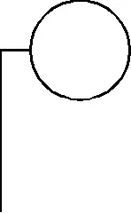 | vast licht dat rondomschijnend is (een licht dat schijnt over een boog van de horizon van 360°) | |
 | vast licht dat schijnt over een beperkte boog van de horizon Een voor de waarnemer niet zichtbaar licht is met een punt in het midden aangeduid. | |
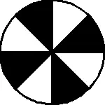 | flikkerlicht | |
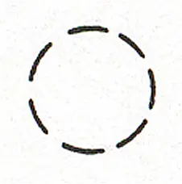 | facultatief licht | |
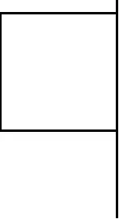 | vlag of bord (artikel 3.03) | |
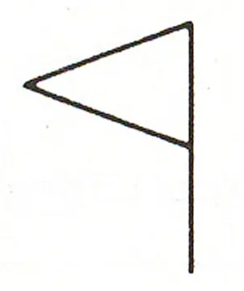 | wimpel (artikel 3.03) | |
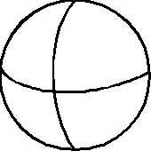 | bol (artikel 3.04) | |
 | cilinder (artikel 3.04) | |
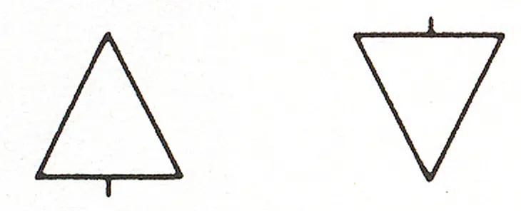 | kegel (artikel 3.04) | |
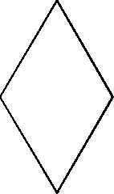 | ruit (artikel 3.04) | |
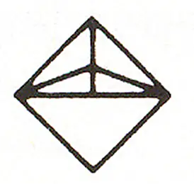 | radarreflektor | |
Lichten | Schets | Dagtekens |
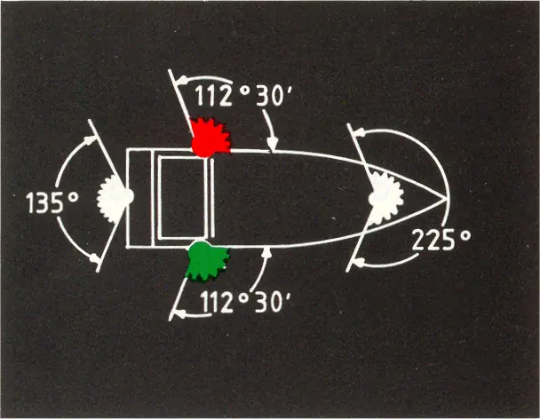 | 1 | |
Artikel 3.01a: Begripsbepalingen. Boog van de horizon waarover toplicht, boordlichten en heklicht schijnen. | ||
 | 2 | |
Artikel 3.08, lid 1: Alleenvarend groot motorschip. | ||
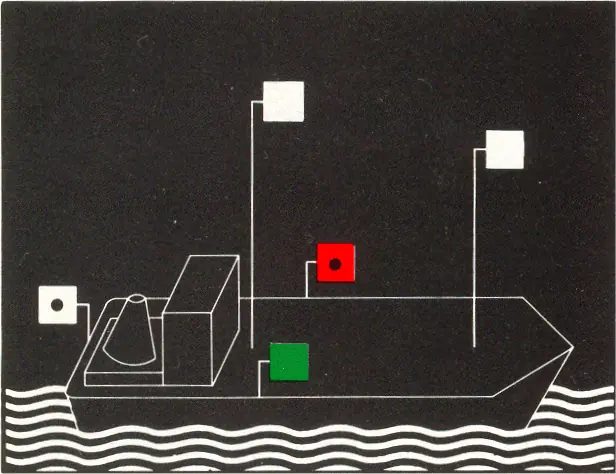 | 3 | |
Artikel 3.08, lid 2: Alleenvarend groot motorschip dat een tweede toplicht voert. | ||
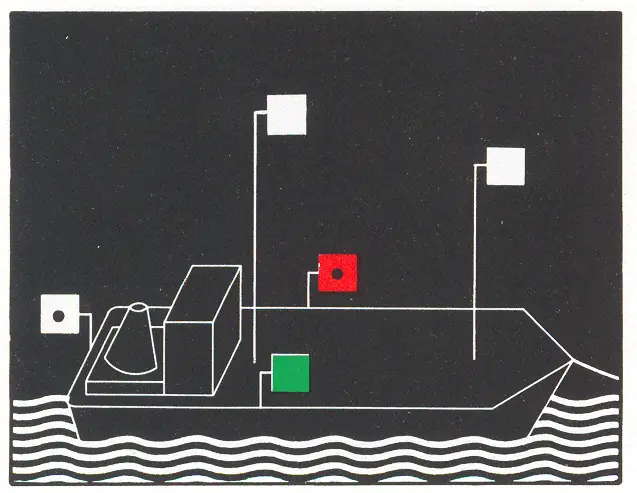 | 4 | 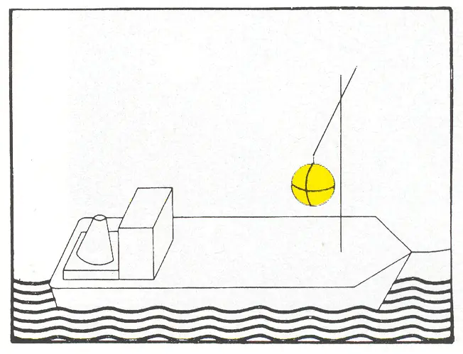 |
Artikel 3.08, lid 3: Groot motorschip dat wordt geassisteerd. | ||
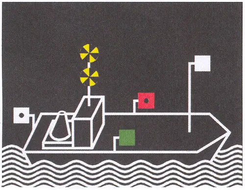 | 4a | 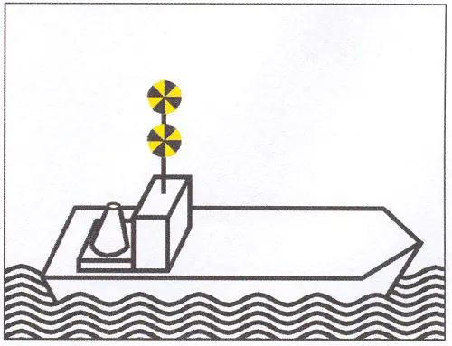 |
Artikel 3.08, lid 4: Snel schip. | ||
Lichten | Schets | Dagtekens |
 | 5 |  |
Artikel 3.09, lid 1: Motorschip dat sleept of assisteert. | ||
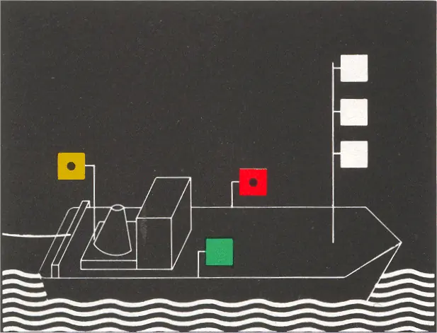 | 6 | 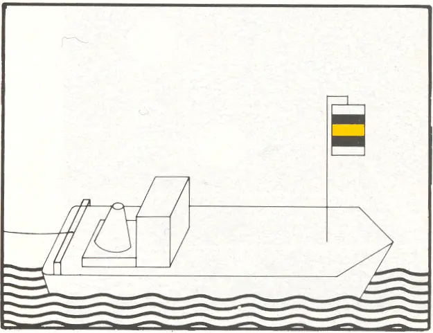 |
Artikel 3.09, lid 2: Motorschepen die, niet in kiellinie varend, slepen of assisteren. | ||
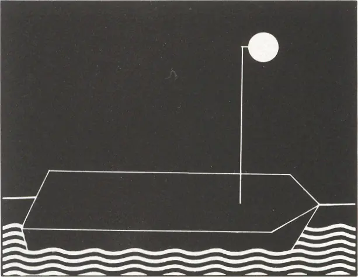 | 7 | 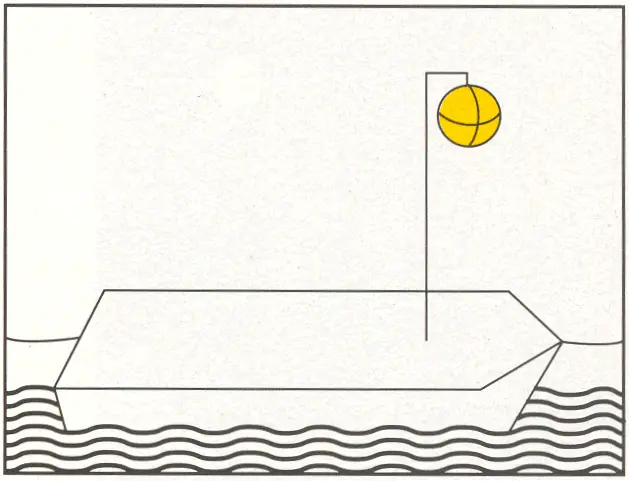 |
Artikel 3.09, lid 3: Gesleept schip. | ||
Lichten | Schets | Dagtekens |
 | 8 | 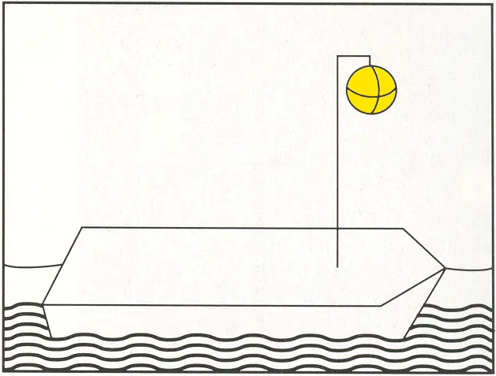 |
Artikel 3.09, lid 3 onder a: Gesleept schip langer dan 110 m. | ||
 | 9 |  |
Artikel 3.09, lid 3 onder b: Lengte in een sleep bestaande uit meer dan twee langszijde van elkaar vastgemaakte schepen. | ||
 | 10 |  |
Artikel 3.09, lid 4: Laatste lengte van een sleep. | ||
Lichten | Schets | Dagtekens |
 | 11 |  |
Artikel 3.09, lid 4: Laatste lengte van een sleep bestaande uit meer dan twee langszijde van elkaar vastgemaakte schepen | ||
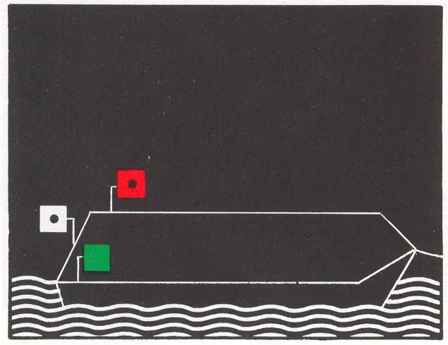 | 12 | |
Artikel 3.09, lid 5: Zeegaand schip dat wordt gesleept. | ||
 | 13 | |
Artikel 3.10, lid 1: Duwstel | ||
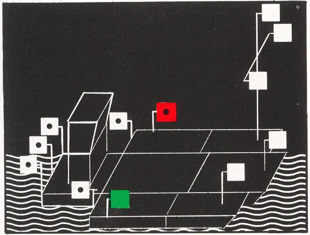 | 14 | |
Artikel 3.10 lid 1 onder c: 2e: Duwstel waarbij op de schepen (aan de buitenzijden), die van achteren over de volle breedte zichtbaar zijn, heklichten worden gevoerd. | ||
Lichten | Schets | Dagtekens |
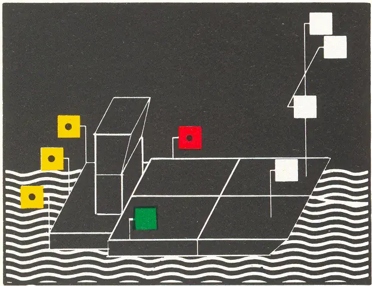 | 15 | 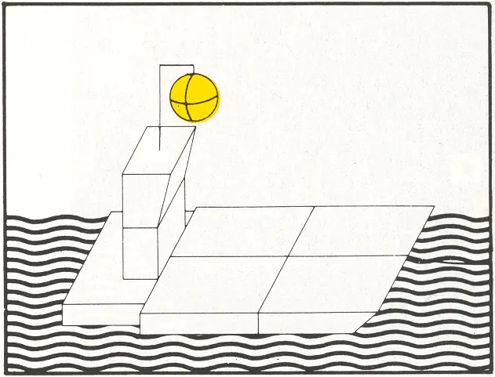 |
Artikel 3.10, lid 2: Duwstel dat wordt geassisteerd. | ||
 | 16 | |
Artikel 3.10, lid 3: Twee duwboten. | ||
 | 17 | |
Artikel 3.11, lid 1: Gekoppeld samenstel; twee grote motorschepen. | ||
Lichten | Schets | Dagtekens |
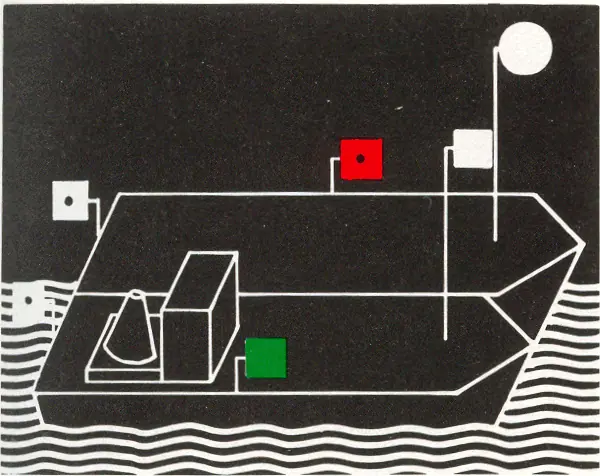 | 18 | |
Artikel 3.11, lid 1: Gekoppeld samenstel; groot motorschip en groot schip dat geen motorschip is. | ||
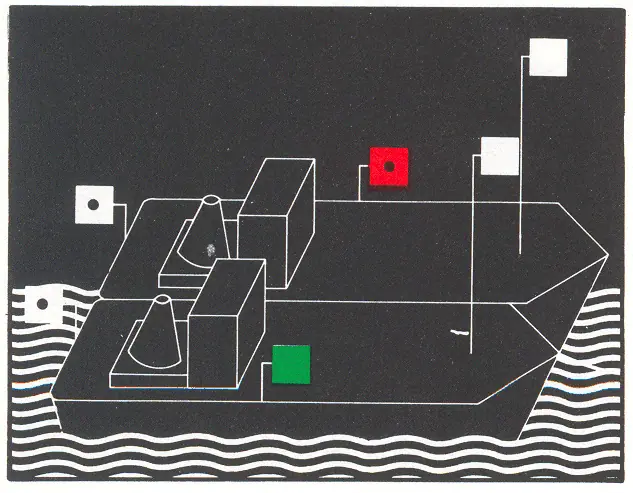 | 19 | 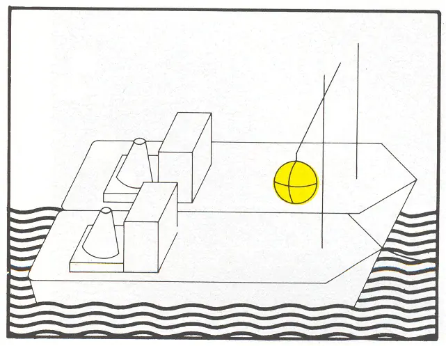 |
Artikel 3.11, lid 2: Gekoppeld samenstel dat wordt geassisteerd. | ||
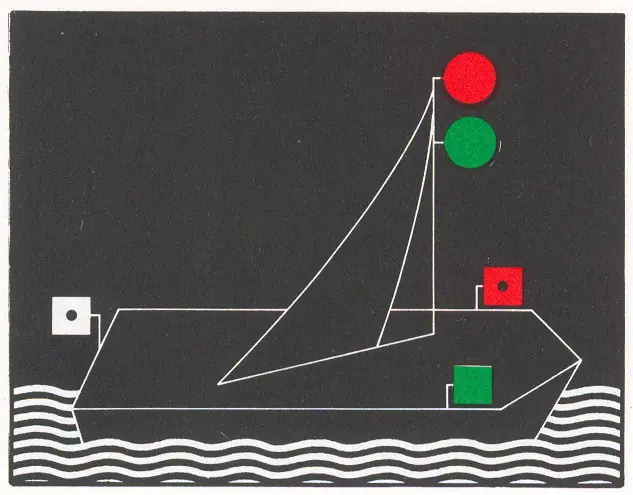 | 20 | |
Artikel 3.12: Groot zeilschip | ||
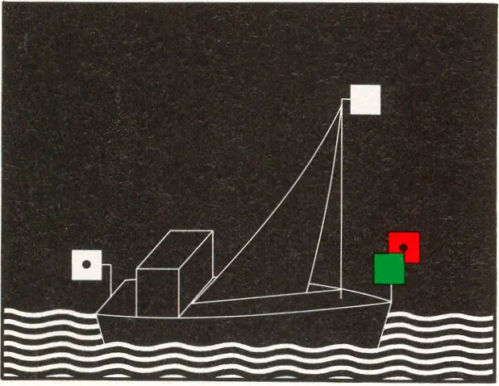 | 21 |  |
De artikelen 3.08, lid 5, en 3.13, lid 7: Schip dat onder zeil vaart en tegelijkertijd zijn mechanische middelen tot voortbeweging gebruikt. | ||
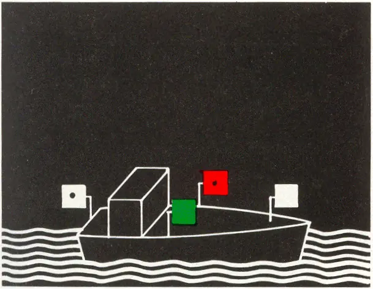 | 22 | |
Artikel 3.13, lid 1 alleenvarend klein motorschip. | ||
Lichten | Schets | Dagtekens |
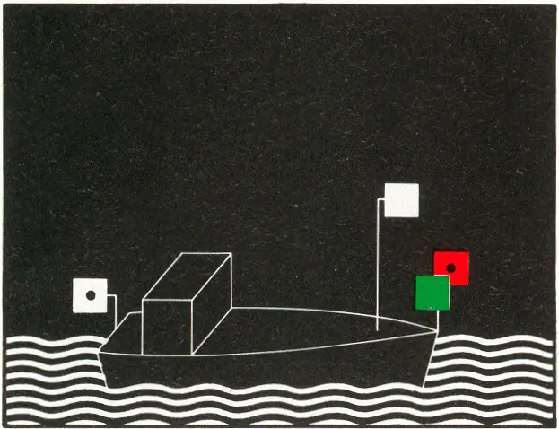 | 23 | |
Artikel 3.13, lid 1: Alleenvarend klein motorschip dat de boordlichten onmiddellijk naast elkaar of in één lantaarn verenigd aan of nabij de boeg voert. | ||
 | 24 | |
Artikel 3.13, lid 1: Alleenvarend klein motorschip dat in plaats van toplicht en heklicht een wit rondom schijnend licht voert. | ||
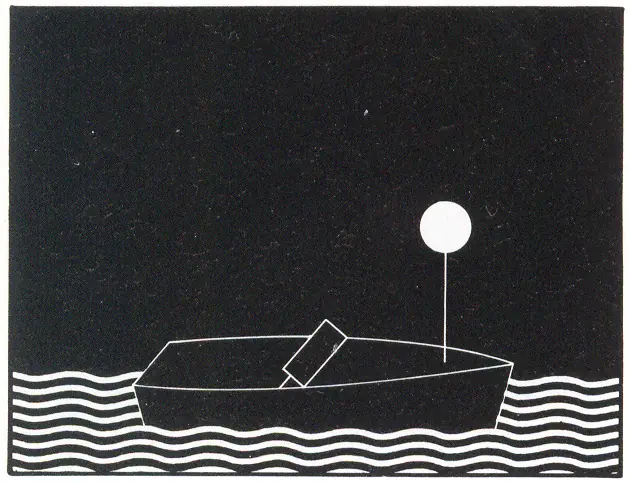 | 25 | |
Artikel 3.13, lid 2: Alleenvarend klein open motorschip korter dan 7 m, waarvan de hoogst bereikbare snelheid 13 km per uur bedraagt. | ||
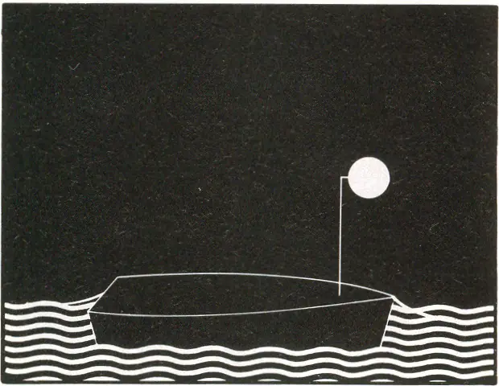 | 26 | |
Artikel 3.13, lid 4: Klein schip dat wordt gesleept dan wel langszijde van een ander schip vastgemaakt wordt voorbewogen. | ||
Lichten | Schets | Dagtekens |
 | 27 | |
Artikel 3.13, lid 5: Klein zeilschip | ||
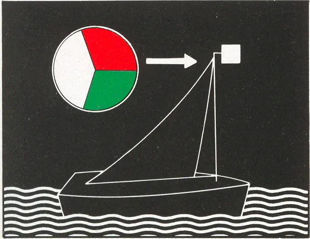 | 28 | |
Artikel 3.13, lid 5: Klein zeilschip waarbij de boordlichten en het heklicht in één lantaarn aan de top van de mast verenigd zijn. | ||
 | 29 | |
Artikel 3.13, lid 5: Klein zeilschip korter dan 7 m. Het tweede licht uitsluitend te tonen bij het naderen van een ander schip bij gevaar voor aanvaring. | ||
Lichten | Schets | Dagtekens |
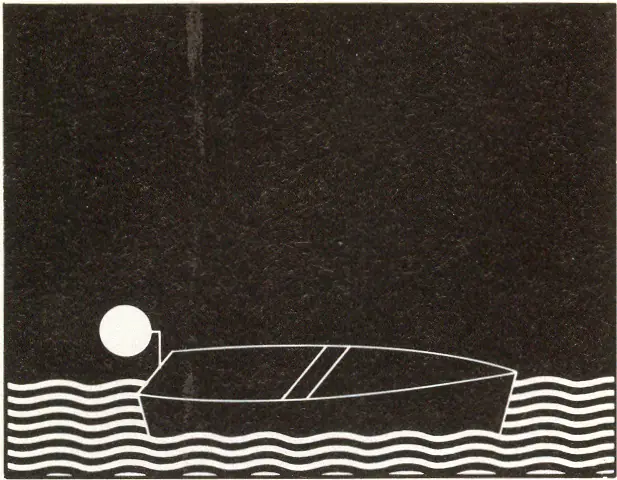 | 30 | |
Artikel 3.13. lid 6: Door spierkracht voortbewogen klein schip. | ||
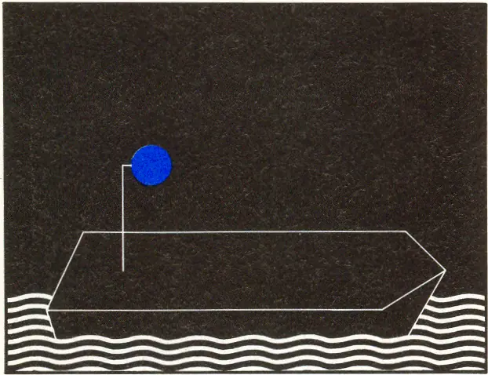 | 31a |  |
Lichten | Schets | Dagtekens |
31b | 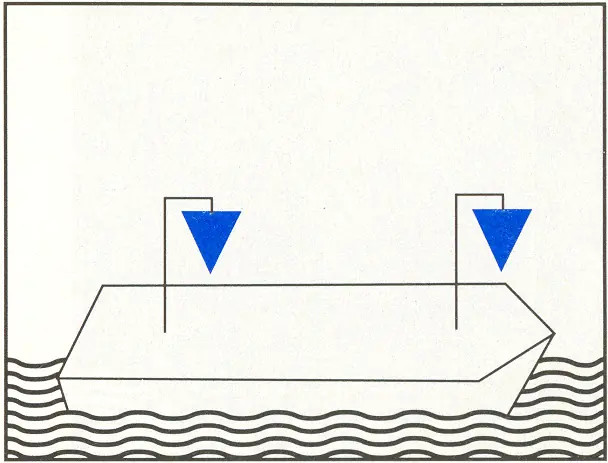 | |
Artikel 3.14, lid 1: Bijkomende tekens van schepen die bepaalde brandbare stoffen vervoeren als bedoeld in het ADN en die geen deel uitmaken van een duwstel of een gekoppeld samenstel. | ||
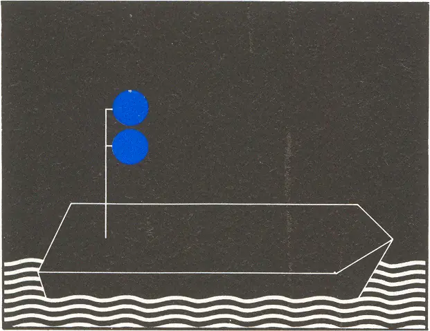 | 32a |  |
32b |  | |
Artikel 3.14, lid 2: Bijkomende tekens van schepen die bepaalde voor de gezondheid schadelijke stoffen vervoeren als bedoeld in het ADN en die geen deel uitmaken van een duwstel of een gekoppeld samenstel. | ||
Lichten | Schets | Dagtekens |
 | 33 |  |
Artikel 3.14, lid 3: Bijkomende tekens van schepen die bepaalde ontplofbare stoffen vervoeren als bedoeld in het ADN en die geen deel uitmaken van een duwstel of een gekoppeld samenstel. | ||
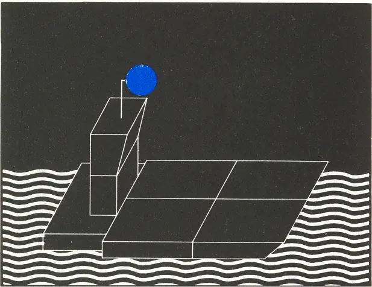 | 34 |  |
Artikel 3.14, lid 4: Bijkomende tekens van duwstellen die gevaarlijke stoffen vervoeren als bedoeld in het ADN. | ||
 | 35 | 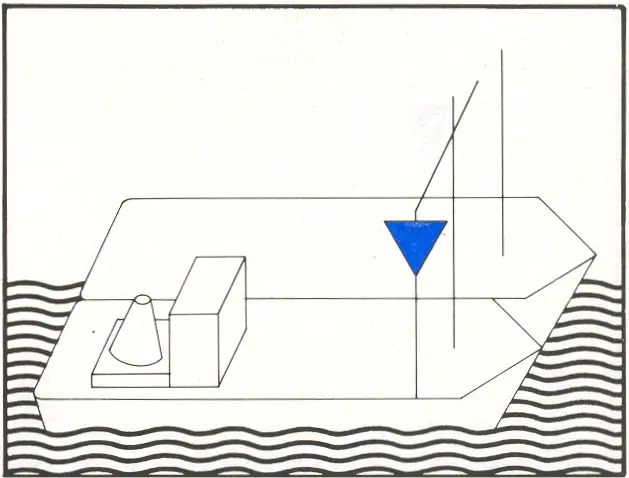 |
Artikel 3.14, lid 4: Bijkomende tekens van gekoppelde samenstellen die gevaarlijke stoffen vervoeren als bedoeld in het ADN. | ||
Lichten | Schets | Dagtekens |
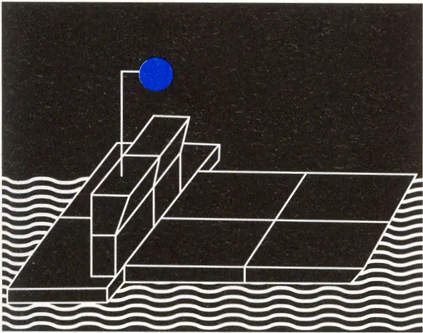 | 36 | 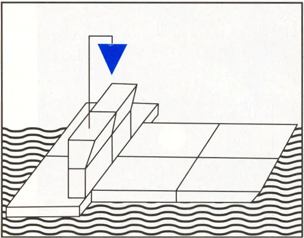 |
Artikel 3.14, lid 5: Bijkomende tekens van een duwstel dat door twee duwboten naast elkaar wordt voortbewogen en dat gevaarlijke stoffen vervoert als bedoeld in het ADN. | ||
36a | 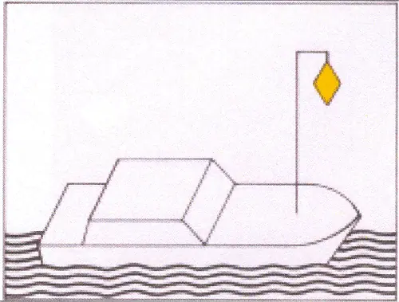 | |
Artikel 3.15: Varend passagiersschip waarvan de maximale lengte van de romp minder is dan 20 m. | ||
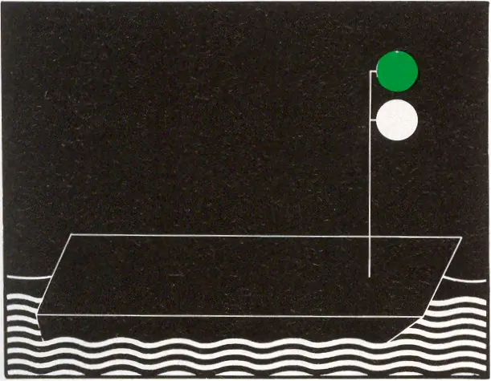 | 37 | |
Artikel 3.16, lid 1: Niet-vrijvarende veerpont. | ||
Lichten | Schets | Dagtekens |
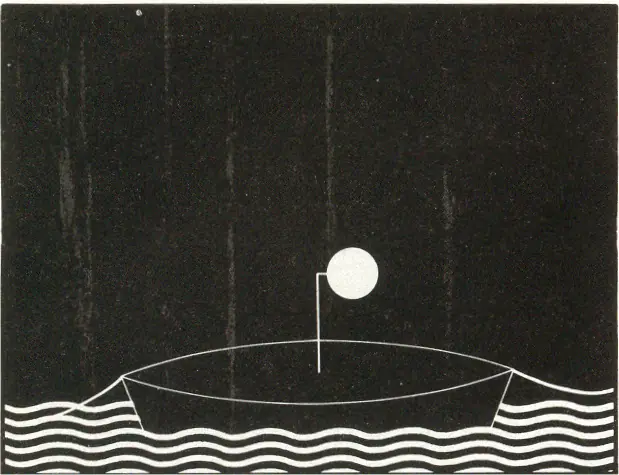 | 38 | |
Artikel 3.16, lid 2: Meest bovenstrooms gelegen ankerschuit of drijver van een veerpont aan een langskabel. | ||
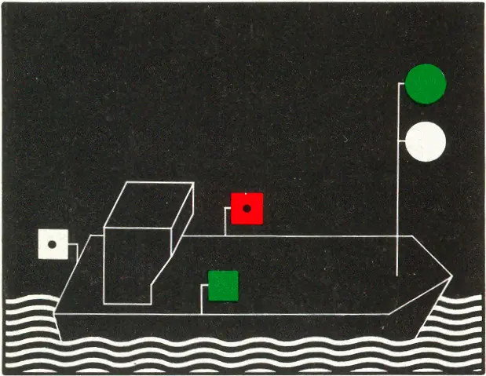 | 39 | |
Artikel 3.16, lid 3: Vrijvarende veerpont. | ||
40 |  | |
Artikel 3.17 Schip dat recht van voorrang heeft. | ||
Lichten | Schets | Dagtekens |
 | 41a |  |
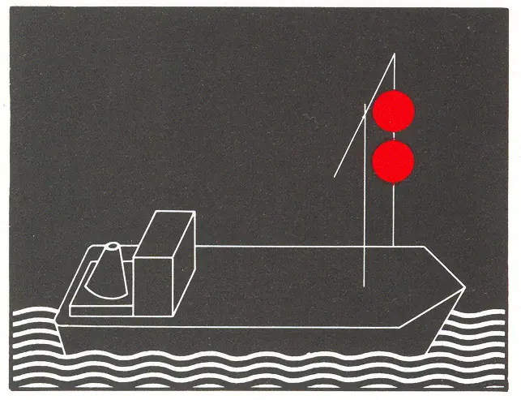 | 41b | 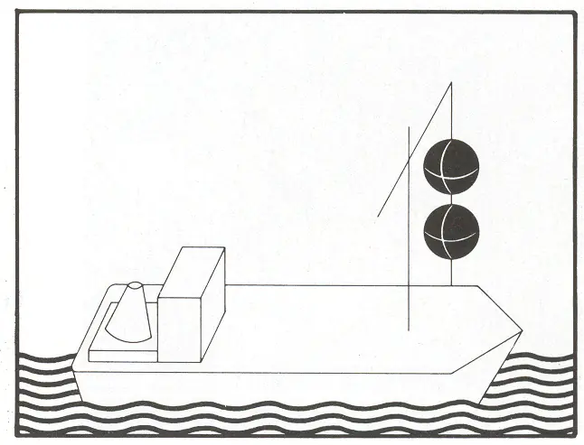 |
Artikel 3.18, lid 1: Bijkomende tekens van schepen die onmanoeuvreerbaar worden. | ||
 | 42 | |
Artikel 3.19 Varend drijvend voorwerp of drijvende inrichting. | ||
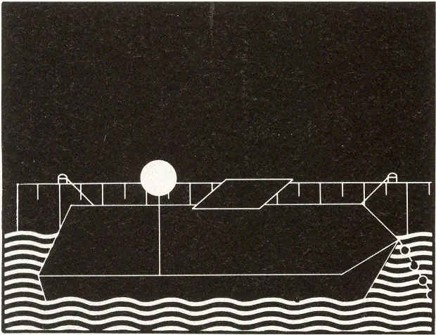 | 43 | |
Artikel 3.20, leden 1 en 4: Gemeerd schip | ||
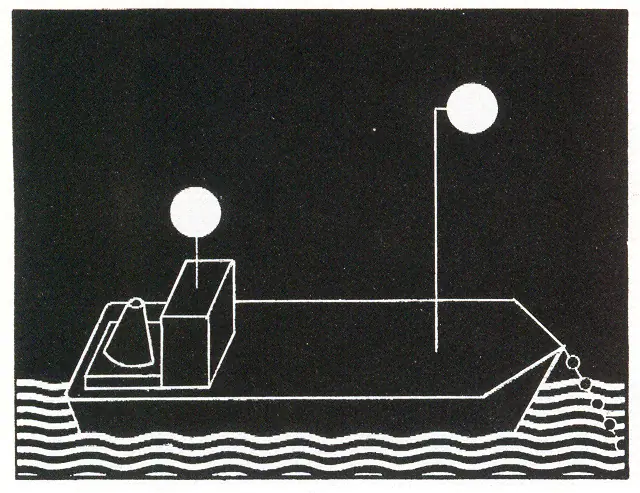 | 44 | |
Artikel 3.20, lid 2: Geankerd groot schip. | ||
45 | ||
Artikel 3.20, lid 3: Geankerd duwstel. | ||
Lichten | Schets | Dagtekens |
46 | ||
Artikel 3.20, lid 4: Geankerd klein schip. | ||
 | 47 | |
Artikel 3.21: Bijkomende tekens van stilliggende schepen die bepaalde gevaarlijke stoffen vervoeren en die geen deel uitmaken van een duwstel of een gekoppeld samenstel. | ||
48 |  | |
Artikel 3.21 Bijkomende tekens van stilliggende duwstellen die bepaalde gevaarlijke stoffen vervoeren. | ||
Lichten | Schets | Dagtekens |
 | 49 |  |
Artikel 3.21: Bijkomende tekens van stilliggende gekoppelde samenstellen die bepaalde gevaarlijke stoffen vervoeren. | ||
 | 50 | |
Artikel 3.22, lid 1: Op zijn aanlegplaats stilliggende niet-vrijvarende veerpont. | ||
 | 51 | |
Artikel 3.22, lid 2: Op zijn aanlegplaats stilliggende vrijvarende veerpont die dienst doet. | ||
Lichten | Schets | Dagtekens |
52 | ||
Artikel 3.23: Stilliggend drijvend voorwerp of drijvende inrichting. | ||
53 | ||
Artikel 3.24 Stilliggend visserschip met netten of uitleggers. | ||
 | 54 |  |
Artikel 3.25, lid 1 onder a: In bedrijf zijnd drijvend werktuig of schip dat in het vaarwater werken uitvoert; doorvaart aan beide zijden vrij. | ||
Lichten | Schets | Dagtekens |
55 |  | |
Artikel 3.25, lid 1 onder a en b: In bedrijf zijnd drijvend werktuig of schip dat in het vaarwater werken uitvoert; doorvaart aan één zijde vrij. | ||
Lichten | Schets | Dagtekens |
 | 56 |  |
Artikel 3.25, lid 1 onder c: In bedrijf zijnd drijvend werktuig, vastgevaren of gezonken schip dat in het vaarwater werken uitvoert; doorvaart aan beide zijden vrij. Tevens verplichting hinderlijke waterbeweging te vermijden. | ||
 | 57 | |
Artikel 3.25, lid 1 onder c en d: In bedrijf zijnd drijvend werktuig, vastgevaren of gezonken schip dat in het vaarwater werken uitvoert; doorvaart slechts aan één zijde vrij. Tevens verplichting hinderlijke waterbeweging te vermijden. | ||
 | 58 |  |
Artikel 3.26, leden 1 en 3: Schip, waarvan de ankers een gevaar voor de scheepvaart kunnen vormen | ||
Lichten | Schets | Dagtekens |
59 |  | |
Artikel 3.26, leden 2 en 3: Drijvend voorwerp of drijvende inrichtingen waarvan de ankers een gevaar voor de scheepvaart kunnen vormen | ||
60 |  | |
Artikel 3.26, lid 4: In bedrijf zijnd drijvend werktuig waarvan de ankers een gevaar voor de scheepvaart kunnen vormen. | ||
 | 61 | |
Artikel 3.27: Schip van ambtenaren belast met toezicht of opsporing of brandweerboot. | ||
Lichten | Schets | Dagtekens |
 | 62 | |
Artikel 3.28 Schip dat in of nabij het vaarwater werkzaamheden uitvoert. | ||
 | 63 | |
Artikel 3.29 Schip, drijvend voorwerp of drijvende inrichting, die tegen hinderlijke waterbeweging beschermd wil worden. | ||
64 | ||
Artikel 3.30 Schip dat in nood verkeert en hulp wenst te ontvangen. |
Lichten | Schets | Dagtekens |
65 |  | |
Artikel 3.31 Verboden toegang aan boord. | ||
 | 66 | |
Artikel 3.32: Verboden te roken en onbeschermd licht of vuur te gebruiken. | ||
 | 67 |  |
Artikel 3.33 Verbod evenwijdig aan een schip ligplaats te nemen. | ||
Lichten | Schets | Dagtekens |
68 | ||
Artikel 3.34, lid 1: Beperkt manoeuvreerbaar schip. | ||
69 | ||
Artikel 3.34, lid 2: Beperkt manoeuvreerbaar schip; vaarwater slechts aan één zijde vrij. | ||
70 | ||
Artikel 3.35: Schip, bezig met mijnopruimingswerkzaamheden. | ||
71 | ||
Artikel 3.36: Loodsboot. | ||
72 | ||
Artikel 3.37: Vissersschip. | ||
74 | ||
Artikel 3.38: Schip gebruikt bij een duiker te water. | ||
 | 75 | |
Artikel 6.04a en 6.05: Ontmoeten stuurboord op stuurboord. |